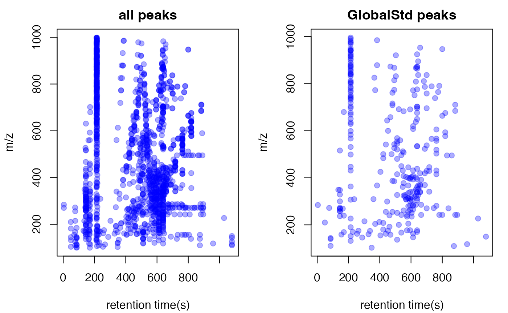

Plot the std mass from GlobalStd algorithm
plotstd(list)a list from getstd function
data(spmeinvivo)
pmd <- getpaired(spmeinvivo)
#> 75 retention time cluster found.
#> 369 paired masses found
#> 5 unique within RT clusters high frequency PMD(s) used for further investigation.
#> The unique within RT clusters high frequency PMD(s) is(are) 28.03 21.98 44.03 17.03 18.01.
#> 719 isotopologue(s) related paired mass found.
#> 492 multi-charger(s) related paired mass found.
std <- getstd(pmd)
#> 8 retention group(s) have single peaks. 14 23 32 33 54 55 56 75
#> 11 group(s) with multiple peaks while no isotope/paired relationship 4 5 7 8 11 41 42 49 68 72 73
#> 9 group(s) with multiple peaks with isotope without paired relationship 2 9 22 26 52 62 64 66 70
#> 4 group(s) with paired relationship without isotope 1 10 15 18
#> 43 group(s) with paired relationship and isotope 3 6 12 13 16 17 19 20 21 24 25 27 28 29 30 31 34 35 36 37 38 39 40 43 44 45 46 47 48 50 51 53 57 58 59 60 61 63 65 67 69 71 74
#> 291 std mass found.
plotstd(std)
